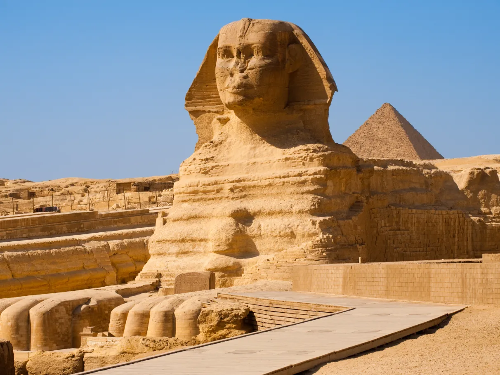
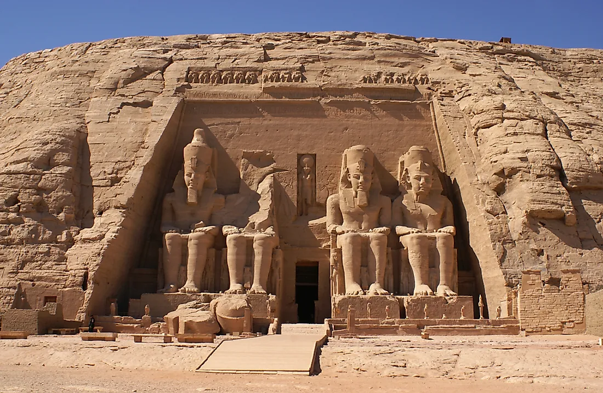

Arquitetura

A arquitetura egípcia é uma das mais impressionantes e duradouras da história da humanidade, marcada por construções monumentais, simetria e forte ligação com a religião. Desde o Egito Antigo, as edificações eram projetadas para resistir ao tempo, utilizando materiais como pedra calcária e granito, o que explica por que muitas delas permanecem preservadas até hoje.
Grande parte das construções tinha função religiosa ou funerária, refletindo a crença na vida após a morte. Os templos eram dedicados aos deuses e funcionavam como centros espirituais e administrativos, enquanto as tumbas, como as pirâmides, eram construídas para abrigar os faraós e garantir sua passagem para a vida eterna. A arquitetura também se destacava pelo uso de colunas imponentes, hieróglifos gravados nas paredes e esculturas que representavam deuses e governantes.
Além disso, as construções seguiam um planejamento rigoroso, com alinhamentos astronômicos e proporções bem definidas. Com o passar do tempo, a arquitetura egípcia evoluiu, recebendo influências de outros povos, mas sem perder suas características principais. Até hoje, essas obras são consideradas verdadeiros marcos da engenharia e da arte antiga.
Obras Notáveis da Arquitetura egípcia
1. Pirâmides de Gizé
Consideradas uma das Sete Maravilhas do Mundo Antigo, foram construídas como tumbas para os faraós e são símbolo máximo do Egito.
2. Esfinge de Gizé
Uma enorme estátua com corpo de leão e cabeça humana, que representa força e sabedoria.
3. Templo de Karnak
Um dos maiores complexos religiosos já construídos, dedicado principalmente ao deus Amon.
4. Templo de Luxor
Conhecido por sua grandiosidade e pelos enormes pilares e estátuas que o cercam.
5. Abu Simbel
Templo esculpido na rocha durante o reinado de Ramsés II, famoso por suas gigantescas estátuas na entrada.
6. Vale dos Reis
Local onde diversos faraós foram enterrados, incluindo Tutancâmon, com tumbas ricamente decoradas.
7. Pirâmide de Djoser (Saqqara)
Considerada a primeira grande construção em pedra da história, marcando o início das pirâmides.